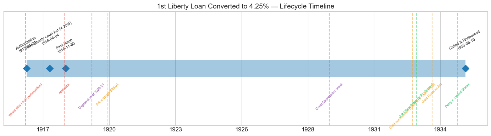
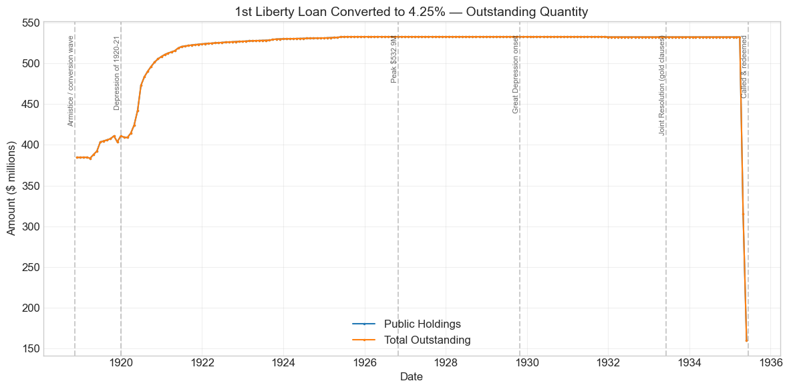
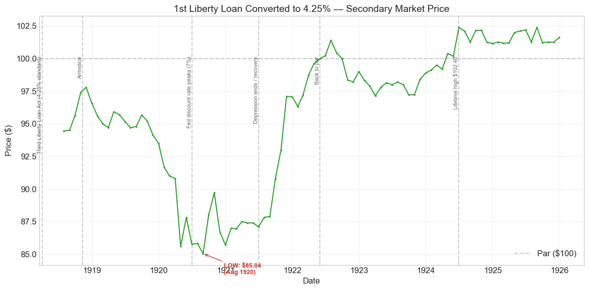
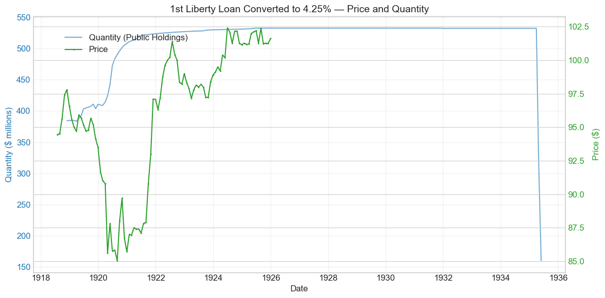
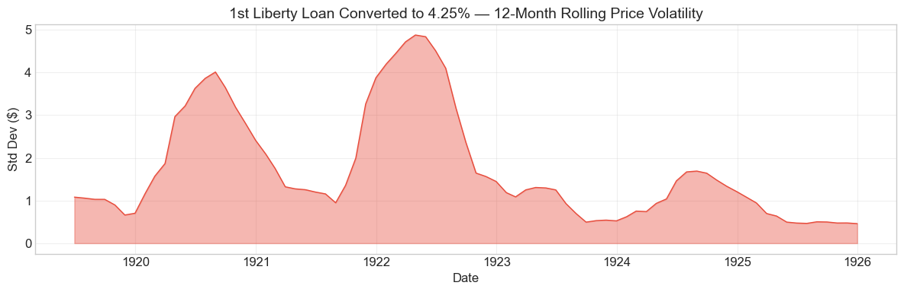

Bond Biography: 1st Liberty Loan Converted to 4.25%#
An Enhanced Chapter from the Hall-Payne-Sargent US Federal Bond Database (2,857 issues, 1776–1960)
Bond ID (L1): 20164 Category: Interest Bearing > Marketable > Liberty Loan Coupon Rate: 4.25% First Issue Date: November 30, 1918 (database recording; the converted bonds were dated May 9, 1918) Term: The First Liberty Loan’s original terms — redeemable at the government’s option from June 15, 1932, payable June 15, 1947: the longest terms in the Liberty program Origin: Issued only in exchange — never sold for cash
This is the bond where the First Liberty Loan’s famous conversion privilege came to rest. When the 3rd Liberty Loan fixed 4.25% as the standard rate of American war finance in April 1918, holders of the original 3.5% Firsts — and of the 4% converted Firsts created a few months earlier — acquired the right to exchange into 4.25% bonds that kept the First Loan’s 1932–47 terms. The security that resulted is the terminal conversion state of the First Liberty Loan: every holder who climbed the coupon ladder ended here, and no further rung was ever offered. Its ninety months of price quotations and seventeen years of quantity records trace the whole interwar arc of the Liberty debt, from the conversion wave of 1918 to the gold-clause endgame of 1935.
import pandas as pd
import numpy as np
import matplotlib.pyplot as plt
import matplotlib.patches as mpatches
import datetime
import warnings
warnings.filterwarnings('ignore')
plt.style.use('seaborn-v0_8-whitegrid')
plt.rcParams.update({'figure.figsize': (12, 6), 'font.size': 12,
'axes.titlesize': 14, 'axes.labelsize': 12})
# Load the bond database
store = pd.HDFStore('../data/BondDF.h5', mode='r')
BondList = store['BondList']
BondQuant = store['BondQuant']
BondPrice = store['BondPrice']
store.close()
BondQuant_T = BondQuant.transpose()
BondPrice_T = BondPrice.transpose()
bond_id = 20164
print(f'Loaded data for: 1st Liberty Loan Converted to 4.25% (ID: 20164)')
/Users/thomassargent/anaconda3/lib/python3.9/site-packages/pandas/core/arrays/masked.py:60: UserWarning: Pandas requires version '1.3.6' or newer of 'bottleneck' (version '1.3.5' currently installed).
from pandas.core import (
Loaded data for: 1st Liberty Loan Converted to 4.25% (ID: 20164)
Overview#
The 1st Liberty Loan Converted to 4.25% was authorized under the First Liberty Loan Act of April 24, 1917 — the statute behind the original 3.5% loan — but it owes its existence to a later one: the Third Liberty Loan Act of April 4, 1918, which set the 4.25% coupon that became the standard rate of the entire war program. The database records its first issue on November 30, 1918, with a coupon rate of 4.25%. The bond was active during World War I (US participation), the Depression of 1920–21, and the Great Depression. During its lifetime on the secondary market, the bond’s average price was \(96.02**, ranging from **\)85.04 to \(102.40** (based on 90 monthly observations from July 31, 1918 to December 31, 1925). Peak outstanding reached **\)532.87 million on October 31, 1926.
The political logic of the security is inherited from its parent, described in the 1st Liberty Loan chapter. Secretary of the Treasury William Gibbs McAdoo had priced the first war loan at 3.5% — below what the market would bear — and defused the resulting risk to patriotic subscribers with a conversion privilege: whenever a later loan carried a higher rate, holders of the Firsts could exchange into that rate. The privilege was exercised in two steps. When the 2nd Liberty Loan offered 4% in the autumn of 1917, some holders converted into the 4% Firsts (treated in a companion chapter). When the Third Liberty Loan Act set 4.25% in April 1918, both the remaining 3.5s and the 4% converted Firsts could climb again — this time into bonds carrying the new standard coupon while retaining the First Loan’s own 1932–47 terms. The bonds of this series were dated May 9, 1918, the same date as the Thirds whose coupon they matched.
What makes this bond’s story distinctive in the arc of U.S. fiscal history is its position as an endpoint. The coupon ladder stopped at 4.25%: the Fourth Loan carried the same rate, and no later loan revived the general conversion privilege. Every First Loan subscriber who chose coupon over tax exemption finished in this security — roughly **\(533 million** of the original \)1.99 billion loan at the peak — and then held it through the longest life of any Liberty bond, until the Treasury called the First Loan in the gold-clause spring of 1935.
Historical Context#
The following major events occurred during this bond’s lifetime:
Date |
Event |
Category |
|---|---|---|
1917-04-06 to 1918-11-11 |
World War I (US participation) |
War |
1918-04-04 |
Third Liberty Loan Act — establishes the 4.25% standard and triggers the conversion right |
Legislation |
1918-11-11 |
Armistice |
War |
1920-01-01 to 1921-07-01 |
Depression of 1920–21 |
Crisis |
1920-06 |
New York Fed discount rate peaks at 7% |
Monetary |
1929-10-29 to 1933-03-01 |
Great Depression onset |
Crisis |
1933-04-05 |
Gold confiscation (Executive Order 6102) |
Monetary |
1933-06-05 |
Joint Resolution abrogating gold clauses |
Legislation |
1934-01-30 |
Gold Reserve Act; dollar devalued to $35/oz |
Monetary |
1935-02-18 |
Perry v. United States decided |
Legal |
1935-06-15 |
First Liberty Loan called and redeemed |
Fiscal |
The War: Born of a Rate the War Kept Raising#
This bond is a wartime creation twice over. The money it represents was raised in the hopeful June of 1917, when four million subscribers bought the 3.5% Firsts at par; the security itself was created in the desperate spring of 1918, when the German offensives forced the Treasury to concede a 4.25% coupon on the Third Loan and the conversion machinery transmitted that concession backward to the First. The war thus set both the bond’s principal and its price. Demand during the conversion window was a matter of arithmetic rather than patriotism: with the identical-coupon Thirds quoted around \(95--\)97 in mid-1918, exchanging a 4% (or 3.5%) First for a 4.25% First was simply the better claim, and the database shows the wave arriving — $384.5 million already in this series at its first quantity observation in November 1918.
The Depression of 1920–21#
Like every Liberty issue, the converted 4.25s were hammered not by any doubt about federal credit but by the postwar level of interest rates. Once the Federal Reserve was freed from supporting Treasury finance, it drove the New York discount rate to 7% by June 1920; postwar inflation and the Victory Loan’s competing 4.75% coupon (May 1919) did the rest. The bond slid from the mid-90s in 1919 to its lifetime low of \(85.04 in August 1920** — bottoming in the same weeks, and in the same low-to-mid 80s, as its siblings. The deflationary collapse that followed reversed the move: as rates fell through 1921--22 the bond staged the family's common V-shaped recovery, regaining **par in May 1922** and spending the mid-1920s at a premium, peaking at **\)102.40 in June 1924.
The Great Depression and the Gold-Clause Endgame#
The database’s price series stops in December 1925, so the 1930s must be read in the quantity series — where the ending is unmistakable. Like all the Liberty Loans, these were gold bonds, promising payment in United States gold coin of the wartime standard. In 1933–34 that promise was dismantled: Executive Order 6102 withdrew gold from circulation, the Joint Resolution of June 5, 1933 declared gold clauses — including the government’s own — against public policy, and the Gold Reserve Act of January 1934 devalued the dollar to \(35 per ounce. In February 1935 the Supreme Court, in ***Perry v. United States*** — a case brought on a Fourth Liberty bond and treated in the [4th Liberty Loan chapter](chapter_20169_4th_Liberty_Loan_enhanced.ipynb) — held that Congress had exceeded its power in abrogating the clause on federal obligations but denied bondholders any damages. With the legal cloud lifted in practice if not in principle, the Treasury completed the liquidation of the wartime 4.25s: having called and refunded the Fourths in 1933--35, it called the **First Liberty Loan — all series, including this one — for redemption on June 15, 1935**, the first-call terms of 1917 having been exercisable since June 1932. The data show public holdings collapsing from \)532 million in March 1935 to $160 million in May, where the series ends, as holders exchanged into new, lower-coupon Treasury securities payable in legal-tender dollars.
# Bond Lifecycle Timeline
fig, ax = plt.subplots(figsize=(14, 4))
# Key dates
dates = [('Authorization', '1917-04-24'), ('Third Liberty Loan Act (4.25%)', '1918-04-04'), ('First Issue', '1918-11-30'), ('Called & Redeemed', '1935-06-15')]
events = [('World War I (US participation)', '1917-04-06', 'war'), ('Armistice', '1918-11-11', 'war'), ('Depression of 1920-21', '1920-01-01', 'crisis'), ('Price trough $85.04', '1920-08-31', 'monetary'), ('Great Depression onset', '1929-10-29', 'crisis'), ('Gold confiscation (Executive Order 6102)', '1933-04-05', 'monetary'), ('Joint Resolution (gold clauses)', '1933-06-05', 'legislation'), ('Gold Reserve Act', '1934-01-30', 'monetary'), ('Perry v. United States', '1935-02-18', 'legislation')]
import matplotlib.dates as mdates
from datetime import datetime
# Plot bond lifetime bar
d0 = datetime.strptime(dates[0][1], '%Y-%m-%d')
d1 = datetime.strptime(dates[-1][1], '%Y-%m-%d')
ax.barh(0, (d1 - d0).days, left=mdates.date2num(d0), height=0.3,
color='#1f77b4', alpha=0.4, label='Bond Lifetime')
# Mark key dates
for label, date_str in dates:
d = datetime.strptime(date_str, '%Y-%m-%d')
ax.plot(mdates.date2num(d), 0, 'D', color='#1f77b4', markersize=10)
ax.annotate(f'{label}\n{date_str}', (mdates.date2num(d), 0.25),
ha='center', va='bottom', fontsize=8, rotation=30)
# Mark historical events
colors = {'war': '#e74c3c', 'crisis': '#9b59b6', 'legislation': '#2ecc71', 'other': '#95a5a6', 'monetary': '#f39c12'}
for name, date_str, cat in events:
d = datetime.strptime(date_str, '%Y-%m-%d')
ax.axvline(mdates.date2num(d), color=colors.get(cat, 'gray'), alpha=0.5, linestyle='--')
ax.annotate(name, (mdates.date2num(d), -0.25), ha='center', va='top',
fontsize=7, rotation=45, color=colors.get(cat, 'gray'))
ax.set_yticks([])
ax.xaxis.set_major_formatter(mdates.DateFormatter('%Y'))
ax.set_title('1st Liberty Loan Converted to 4.25% — Lifecycle Timeline')
ax.set_ylim(-1, 1)
plt.tight_layout()
plt.show()

Bond Features#
Feature |
Detail |
|---|---|
Name |
1st Liberty Loan Converted to 4.25% |
Authorizing Act |
First Liberty Loan Act (April 24, 1917); conversion right triggered by the Third Liberty Loan Act (April 4, 1918) |
First Issue Date |
November 30, 1918 (database recording; bonds dated May 9, 1918) |
Term |
The First Loan’s original 30-year terms |
First Call Date |
June 15, 1932 (redeemable at the government’s option thereafter) |
Maturity |
June 15, 1947 |
Coupon Rate |
4.25% |
Payment Frequency |
Semi-annual (June 15 and December 15) |
Callable |
Yes |
Payable in Coin |
Yes — a gold-clause bond of the wartime standard |
Price |
Par (100) — issued only in exchange for 3.5% and 4% First Liberty bonds, face value for face value |
Peak Outstanding |
$532.87 million (October 31, 1926) |
Tax Status |
Exempt from state and local taxes and the normal federal income tax; subject to surtaxes — the full exemption of the original 3.5s was not carried over |
Conversion Privilege |
None remaining — the terminal state of the First Loan’s coupon ladder |
Two rows carry the bond’s character. The terms are the First Liberty Loan’s own: not callable before June 15, 1932, not payable until June 15, 1947 — the longest dates in the Liberty family, which made this the longest-duration claim among the wartime 4.25s and, in the event, part of the longest-lived Liberty loan. And the tax status explains the great sorting of 1918: converting bought three-quarters of a point of coupon but surrendered the 3.5s’ exemption from the wartime surtaxes. Large taxable fortunes mostly stayed at 3.5%; those for whom the surtax exemption was worth little took the coupon and ended here.
# Display full bond features from database
row = BondList.loc[20164]
display_cols = [
"Treasury's Name Of Issue", 'Authorizing Act', 'Term Of Loan',
'First Issue Date', 'First Redemption Date', 'Final Redemption Date',
'Coupon Rate', 'Coupons Per Year', 'Callable', 'Coin',
'Authorized Amount', 'Price Sold'
]
print('Bond Features from Database:')
print('=' * 55)
for col in display_cols:
if col in row.index:
print(f' {col:<30} {row[col]}')
Bond Features from Database:
=======================================================
Treasury's Name Of Issue 1st Liberty Loan Converted to 4.25%
Authorizing Act April 24, 1917
Term Of Loan 30 years
First Issue Date 1918-11-30 00:00:00
First Redemption Date NaT
Final Redemption Date NaT
Coupon Rate 4.25
Coupons Per Year 2.0
Callable 1.0
Coin 1.0
Authorized Amount nan
Price Sold 1.0
Bond Quantity Over Time#
The bond’s outstanding quantity peaked at $532.87 million on 1926-10-31. Data spans from 1918-11-30 to 1935-05-31 (199 monthly observations).
The shape is unlike any other Liberty series: no installment-driven ascent (no cash was ever subscribed), but instead a large opening balance deposited by the conversion wave of 1918, a slow eight-year accretion as stragglers kept converting, a dead-flat plateau through the entire Depression, and a two-month cliff in the spring of 1935 when the First Loan was called.
# Bond quantity over time
fig, ax = plt.subplots(figsize=(12, 6))
for stype in ['Public Holdings', 'Total Outstanding']:
try:
s = BondQuant_T.loc[(20164, stype)]
s = s[s.notna()]
if len(s) > 0:
ax.plot(s.index, s.values / 1e6, marker='.', markersize=3, linewidth=1.5, label=stype)
except KeyError:
pass
ax.set_title('1st Liberty Loan Converted to 4.25% — Outstanding Quantity')
ax.set_xlabel('Date')
ax.set_ylabel('Amount ($ millions)')
ax.legend()
ax.grid(True, alpha=0.3)
events = {'1918-11-11': 'Armistice / conversion wave', '1920-01-01': 'Depression of 1920-21', '1926-10-31': 'Peak $532.9M', '1929-10-29': 'Great Depression onset', '1933-06-05': 'Joint Resolution (gold clauses)', '1935-06-15': 'Called & redeemed'}
for date_str, label in events.items():
d = pd.Timestamp(date_str)
ax.axvline(d, color='gray', alpha=0.4, linestyle='--')
ax.text(d, ax.get_ylim()[1]*0.97, label, rotation=90, va='top', ha='right', fontsize=8, alpha=0.7)
plt.tight_layout()
plt.show()

Quantity Analysis#
Nothing in this series was ever issued in the ordinary sense: every dollar arrived by exchange from another First Liberty security. Three phases drove the pattern:
1. The conversion wave (1918). When the Third Liberty Loan Act set the 4.25% standard in April 1918, the conversion machinery moved a quarter of the First Loan up the coupon ladder within months. At the series’ first observation, November 30, 1918, **\(384.5 million** was already outstanding. The database records the whole reshuffle in that month: the original 3.5s (ID 20162) drop by roughly \)575 million, of which about \(385 million lands here and about \)191 million rests, for the moment, in the 4% converted Firsts — the intermediate rung, treated in a companion chapter. (A small fourth series, the “Second Converted” 4.25s of October 1918, about $3.5 million, arose from a fresh conversion window granted to 3.5% holders by the Fourth Liberty Bond Act.)
2. The slow accretion (1919–1926). Holdings then climbed from \(385 million to the peak of **\)532.9 million in October 1926** — a \(148 million, eight-year drift upward. The mirror image sits in the 4% series, which drained from \)191 million at end-1918 to about \(5 million by 1925: the Treasury left the 4% bonds' right to convert into 4.25s open rather than letting it lapse, and holders kept trickling through, heavily in 1919--21 and in dwindling amounts thereafter. By the mid-1920s the sorting was complete: of the original \)1.99 billion First Loan, roughly \(1.4 billion remained at 3.5%** (its superior tax exemption intact), **\)533 million had reached 4.25%, and only remnants sat on the intermediate rungs.
3. Plateau and endgame (1927–1935). From 1927 the series flatlines at ~\(532.5 million — through the crash, the banking crises, and the departure from gold — because the Mellon-era retirement machinery concentrated on nearer maturities (the Seconds were called in 1927, the Thirds matured in 1928) while the Firsts, callable only from June 1932, sat untouched. The end came in two months: **holdings fell to \)315.2 million in April 1935 and $159.9 million in May 1935, where the series stops**, as the Treasury — fresh from the Fourths’ refunding and the Perry decision — called the First Liberty Loan for redemption on June 15, 1935 and exchanged most of it into new, cheaper securities in advance of the date. All four First Liberty series end in the database in the same two months: the loan of 1917 left the books as one.
Secondary Market Prices#
Overall Statistics (1918-07-31 to 1925-12-31): Mean \(96.02, Range \)85.04–\(102.4, Std Dev \)5.2, 90 observations.
By Period:
Period |
Mean |
Std |
Min |
Max |
Obs |
|---|---|---|---|---|---|
Start to Issue (1918-07 to 1918-11) |
$95.96 |
$1.58 |
$94.46 |
$97.8 |
5 |
Issue to End (1918-11 to 1925-12) |
$96.05 |
$5.31 |
$85.04 |
$102.4 |
86 |
Note the apparent oddity that quotations begin in July 1918, four months before the database’s November 1918 first-issue date. This is a recording artifact, not a mystery: the converted 4.25s were dated May 9, 1918 and certificates were delivered as conversions were processed through the summer and autumn, so the market quoted the series months before the database’s quantity ledger first carries it as a separate line.
The price history then follows the three acts common to every Liberty issue:
Wartime, below par (1918). The bond entered the record at \(94.46 in July 1918 and firmed to **\)97.80 in November** as victory neared — always a point or so above the identical-coupon Thirds’ quotes, but never at the par its holders had originally paid in 1917. A 4.25% gold bond simply did not command 100 in the 1918 market.
The postwar slide (1919 – August 1920). Postwar inflation, the Victory Loan’s 4.75% coupon, and the Federal Reserve’s tightening to a 7% discount rate ground the price to its lifetime low of $85.04 in August 1920. The maximum drawdown, -13.1% from the November 1918 peak, was steeper than the short Thirds’ (-12.7%) and shallower than the longer 2nd and 4th Loan declines — exactly where the First’s 1932–47 terms placed it on the duration ladder, with the drawdown further damped by the fact that the series’ 1918 peak was already below par.
Recovery and premium (late 1921 – 1925). As deflation broke the rate cycle, the bond rallied from the mid-80s to regain par in May 1922, and from 1924 traded consistently above 100, peaking at $102.40 in June 1924. As with its callable siblings, the premium was structurally capped: a bond the Treasury could redeem at 100 from June 1932 could not stray far above par, and by 1925 the market was already pricing the call that eventually came in 1935. The price series ends in December 1925.
# Annotated price chart
fig, ax = plt.subplots(figsize=(12, 6))
s = BondPrice_T.loc[(20164, 'Average')]
s = pd.to_numeric(s, errors='coerce').dropna()
if len(s) > 0:
ax.plot(s.index, s.values, marker='.', markersize=3, linewidth=1.5, color='#2ca02c')
ax.axhline(100, color='black', alpha=0.2, linestyle='--', label='Par ($100)')
ax.set_title('1st Liberty Loan Converted to 4.25% — Secondary Market Price')
ax.set_xlabel('Date')
ax.set_ylabel('Price ($)')
ax.legend()
ax.grid(True, alpha=0.3)
events = {'1918-04-04': 'Third Liberty Loan Act (4.25% standard)', '1918-11-11': 'Armistice', '1920-06-30': 'Fed discount rate peaks (7%)', '1921-07-01': 'Depression ends / recovery', '1922-05-31': 'Back to par', '1924-06-30': 'Lifetime high $102.40'}
for date_str, label in events.items():
d = pd.Timestamp(date_str)
ax.axvline(d, color='gray', alpha=0.4, linestyle='--')
ax.text(d, ax.get_ylim()[1]*0.97, label, rotation=90, va='top', ha='right', fontsize=8, alpha=0.7)
# Mark the lifetime low
low_date, low_val = s.idxmin(), s.min()
ax.annotate(f'LOW: ${low_val:.2f}\n({low_date.strftime("%b %Y")})',
xy=(low_date, low_val), xytext=(30, -30), textcoords='offset points',
fontsize=9, fontweight='bold', color='#c0392b',
arrowprops=dict(arrowstyle='->', color='#c0392b'))
plt.tight_layout()
plt.show()

# Price and Quantity — dual-axis chart
fig, ax1 = plt.subplots(figsize=(12, 6))
# Quantity (left axis)
for stype in ['Public Holdings', 'Total Outstanding']:
try:
q = BondQuant_T.loc[(20164, stype)]
q = q[q.notna()]
if len(q) > 0:
ax1.plot(q.index, q.values / 1e6, color='#1f77b4', alpha=0.6, label=f'Quantity ({stype})')
break
except KeyError:
pass
ax1.set_xlabel('Date')
ax1.set_ylabel('Quantity ($ millions)', color='#1f77b4')
ax1.tick_params(axis='y', labelcolor='#1f77b4')
# Price (right axis)
ax2 = ax1.twinx()
p = BondPrice_T.loc[(20164, 'Average')]
p = pd.to_numeric(p, errors='coerce').dropna()
if len(p) > 0:
ax2.plot(p.index, p.values, color='#2ca02c', marker='.', markersize=2, label='Price')
ax2.set_ylabel('Price ($)', color='#2ca02c')
ax2.tick_params(axis='y', labelcolor='#2ca02c')
ax1.set_title('1st Liberty Loan Converted to 4.25% — Price and Quantity')
ax1.grid(True, alpha=0.3)
fig.legend(loc='upper left', bbox_to_anchor=(0.1, 0.9))
plt.tight_layout()
plt.show()

Detected Price/Quantity Events#
The following significant movements were auto-detected:
Date |
Type |
Change |
Explanation |
|---|---|---|---|
1920-04 |
Price drop |
-5.7% |
The sharpest month of the postwar bear market in Liberty bonds. The Federal Reserve had raised the New York discount rate to 6% in January 1920 and would push it to 7% by June; the price fell from \(90.80 to \)85.60 as long-term yields ratcheted up. Every Liberty issue lurched down together in these weeks — a level-of-interest-rates event, not a judgment on this bond. |
1935-04 |
Quantity decrease |
-40.8% |
The call of the First Liberty Loan. The raw draft’s “None identified” is a gap in the event library, not a mystery in the data. With the gold clause abrogated, the dollar devalued, and Perry v. United States decided (February 1935), the Treasury called the entire First Liberty Loan — all series — for redemption on June 15, 1935, and offered exchanges into new lower-coupon Treasury obligations. Holdings fell from \(532.5 million to \)315.2 million as holders accepted. |
1935-05 |
Quantity decrease |
-49.3% |
The refunding’s second month: holdings fell to $159.9 million, and the series ends here, just short of the June 15 redemption date, when the balance was paid off in legal-tender dollars. The identical two-month cliff appears in the 3.5%, 4%, and Second Converted 4.25% series. |
The auto-detector also missed the gentler movements that define the series: the +4.4% rebound of November 1921, when the deflation-driven recovery in bond prices took hold, and the slow 1919–1926 accretion of quantity through the open conversion privilege — a process too gradual to trip any single-month threshold.
Price Volatility#
Maximum drawdown: -13.1% (from peak on 1918-11-30 to trough on 1920-08-31)
Average monthly return: 0.091%
The chart below shows the 12-month rolling standard deviation of prices, indicating periods of high and low price stability. As for every Liberty issue, volatility peaks around 1920–21, when the Federal Reserve’s postwar tightening and the deflationary collapse that followed whipsawed long-term rates; the placid readings of 1923–25 show a seasoned premium bond whose upside was capped by the 1932 call date and whose credit was never in question.
# Rolling volatility (12-month window)
p = BondPrice_T.loc[(20164, 'Average')]
p = pd.to_numeric(p, errors='coerce').dropna()
if len(p) >= 12:
rolling_std = p.rolling(window=12).std().dropna()
fig, ax = plt.subplots(figsize=(12, 4))
ax.fill_between(rolling_std.index, rolling_std.values, alpha=0.4, color='#e74c3c')
ax.plot(rolling_std.index, rolling_std.values, color='#e74c3c', linewidth=1)
ax.set_title('1st Liberty Loan Converted to 4.25% — 12-Month Rolling Price Volatility')
ax.set_xlabel('Date')
ax.set_ylabel('Std Dev ($)')
ax.grid(True, alpha=0.3)
plt.tight_layout()
plt.show()
else:
print('Insufficient data for rolling volatility (need >= 12 observations)')

Issuance, Distribution, and Redemption#
The bond was issued at par (\(100 per \)100 of face value) — and only in exchange. No cash subscription was ever taken for this security: it could be acquired solely by surrendering a 3.5% or 4% First Liberty bond, face for face, plus an adjustment of accrued interest between the differing coupon dates. Its “distribution” was therefore the First Loan’s distribution of June 1917, described in the parent chapter: the four million subscribers recruited by McAdoo’s rallies, banks, and Boy Scouts, whose certificates in the standard Liberty denominations (from $50 for coupon bonds, with registered bonds running to large round amounts) passed through the Federal Reserve Banks’ conversion windows in 1918 and after.
Who converted — and who did not. Conversion was a financial decision layered on a patriotic one, and it sorted holders by tax bracket. The exchange offered +0.75% of coupon (from 3.5%) or +0.25% (from 4%) at the price of the original issue’s immunity from surtaxes. Small savers, institutions, and modest-income households — for whom the surtax exemption was worthless — converted; the largest private fortunes largely did not. The result, visible in the quantity data, was a First Loan split roughly \(1.4 billion (3.5%) / \)0.53 billion (4.25%) / remnants (4%) by the mid-1920s. Banks and the Federal Reserve machinery handled the mechanics without charge, as they had the original sale.
Redemption. The First Loan’s contract made the bonds redeemable at the government’s option on any interest date from June 15, 1932. The Treasury did not move at the first opportunity — 1932 was no year for a giant refunding — but once the gold-clause legislation of 1933, the 1934 devaluation, and the Perry decision of February 1935 had cleared the ground, and with the Fourth Loan’s much larger refunding already largely executed, it called the First Liberty Loan for redemption on June 15, 1935. As with the Fourths, the operation was run principally through exchange offerings: holders were invited to swap into new Treasury bonds and notes at substantially lower coupons, and most did, with the balance redeemed in cash — in legal-tender dollars, not the gold coin of the 1917 promise. The database’s April–May 1935 collapse from \(532 million to \)160 million, and the series’ end at that point, is this operation in monthly form. With it, the last of the money raised in the first war loan of 1917 left the Treasury’s books at 4.25%, eighteen years after it arrived at 3.5%.
Implications and Legacy#
One Loan, Three Securities: A Compact History of Coupon Escalation#
Read together, the First Loan’s three coupon states — 3.5%, 4%, 4.25% — compress the whole dilemma of democratic war finance into a single instrument’s biography. The Treasury priced the first loan below the market to advertise national credit; the war forced the market rate up through two subsequent loans; and the conversion privilege transmitted each increase backward, protecting the subscribers of 1917 from the Treasury’s own optimism. This bond is where that ratchet stopped. Because the Fourth Loan repeated rather than raised the Third’s 4.25%, no further conversion was ever triggered, and the ladder’s top rung became the First Loan’s terminal state. The cost of the protection was real — every converted bond paid an extra 0.75% for up to twenty-nine years — and the Treasury never again offered a general conversion privilege on a marketable loan. The problem it had solved, small savers watching patriotic purchases sink below cost, was answered a generation later by a different design entirely: the non-marketable World War II savings bond, whose redemption value could not fall.
The Option That Didn’t Convert: The Tax-Exemption Lesson#
The great surprise of the conversion episode is how many holders declined a free coupon increase. Roughly seventy percent of the First Loan stayed at 3.5% because the original bonds’ full surtax exemption was worth more than 0.75% to high-bracket investors. The episode is an early, cleanly observed demonstration that after-tax yield governs bond values — a fact that would shape Treasury debt design (and the long argument over tax-exempt securities) throughout the 1920s, and one that the side-by-side price series of the 3.5s and 4.25s let us measure month by month.
The Longest Liberty Terms — and the Interwar Record#
Carrying the First’s June 1932/June 1947 dates, this bond had the longest terms in the Liberty program, and the loan it belonged to lived longer than any sibling — from June 1917 to June 1935. Its record spans the whole interwar cycle of American interest rates: issued below par in a 1918 market that demanded more than 4.25%, crushed to 85 by the 7% money of 1920, restored to a premium by the deflation and easy money of the mid-1920s, and finally called away when the Treasury of the 1930s could borrow at a fraction of its coupon. The 1935 refunding closed the circle of the war debt: measured against the 4.25% standard the Third Loan had set, the interest savings on the Liberty refundings of 1927–1935 were among the largest fiscal dividends of the era.
Gold Clauses and the Meaning of the 1935 Call#
Like all its siblings this was a gold bond, and its redemption fell on the far side of the gold-clause rupture of 1933–35. Holders redeemed or exchanged in 1935 received dollars that were, by the 1917 gold definition, devalued — the outcome litigated (on a Fourth Liberty bond) in Perry v. United States, which belongs to the 4th Liberty Loan chapter. For this bond the episode’s trace is quiet but total: an eighteen-year-old promise of gold coin, extinguished on a June interest date with legal-tender money and a lower-coupon exchange offer. That the operation proceeded smoothly — and that the market absorbed a half-billion-dollar call amid the Depression without disturbance — says as much about the durability of U.S. creditworthiness, in the narrow sense of dollars promised and dollars paid, as the untroubled coupon record of the preceding seventeen years.
References#
Primary Database#
Payne, J., Szoke, A., Hall, G. & Sargent, T. (2025). Quarterly Journal of Economics.
Primary Sources#
First Liberty Loan Act, Act of April 24, 1917 (40 Stat. 35).
Third Liberty Loan Act, Act of April 4, 1918 (amending the Second Liberty Bond Act of September 24, 1917).
Joint Resolution of June 5, 1933 (48 Stat. 112), abrogating gold clauses.
Perry v. United States, 294 U.S. 330 (1935).
Annual Report of the Secretary of the Treasury on the State of the Finances, 1918 and 1935. Washington: Government Printing Office.
Scholarly Works#
Garbade, K. D. (2012). Birth of a Market: The U.S. Treasury Securities Market from the Great War to the Great Depression. MIT Press.
Kang, S. W. & Rockoff, H. (2015). “Capitalizing Patriotism: The Liberty Loans of World War I.” Financial History Review, 22(1): 45–78.
Rockoff, H. (2012). America’s Economic Way of War: War and the US Economy from the Spanish-American War to the First Gulf War. Cambridge University Press.
Friedman, M. & Schwartz, A. J. (1963). A Monetary History of the United States, 1867–1960. Princeton University Press.
Studenski, P. & Krooss, H. E. (1952). Financial History of the United States. McGraw-Hill.
Historical Sources#
Federal Reserve History. “Liberty Bonds.” Link
Silber, W. L. (2007). When Washington Shut Down Wall Street: The Great Financial Crisis of 1914 and the Origins of America’s Monetary Supremacy. Princeton University Press.
Tooze, A. (2014). The Deluge: The Great War, America and the Remaking of the Global Order, 1916–1931. Penguin Books.
Enhanced Bond Biography generated from the Hall-Payne-Sargent Bond Database. Companion chapter to the 1st Liberty Loan of 1917 (3.5%) and the 3rd Liberty Loan, whose 4.25% standard this bond adopted; the 4% converted Firsts and the gold-clause litigation of the 4th Liberty Loan are treated in their own chapters.